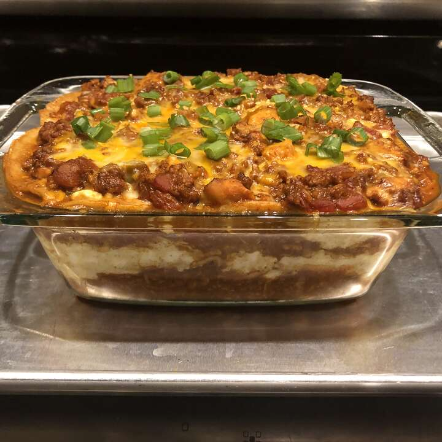

Lasagna

This enchilada lasagna is perfect for dinner or potlucks.
yummy
Ingredients
- 1 tablespoon vegetable oil
- 1 onion,choppe
- 3 cloves garlic, chopped
- 1 (28 ounce) can enchilada sauce
- 1 (16 ounce) package small-curd cottage cheese
Steps
- Heat oil in a large pot over medium heat. Add onion and garlic; cook and stir until onion is translucent, about 5 minutes. Stir in ground turkey; cook until no longer pink, about 5 minutes. Drain excess grease.
- Stir enchilada sauce and diced tomatoes into the pot. Simmer until flavors combine, about 20 minutes. Remove from heat.
- Preheat the oven to 375 degrees F (190 degrees C).
- Mix cottage cheese, egg, and cumin together in a small bowl.
- Spray a large piece of aluminum foil with cooking spray; cover the baking dish with aluminum foil.